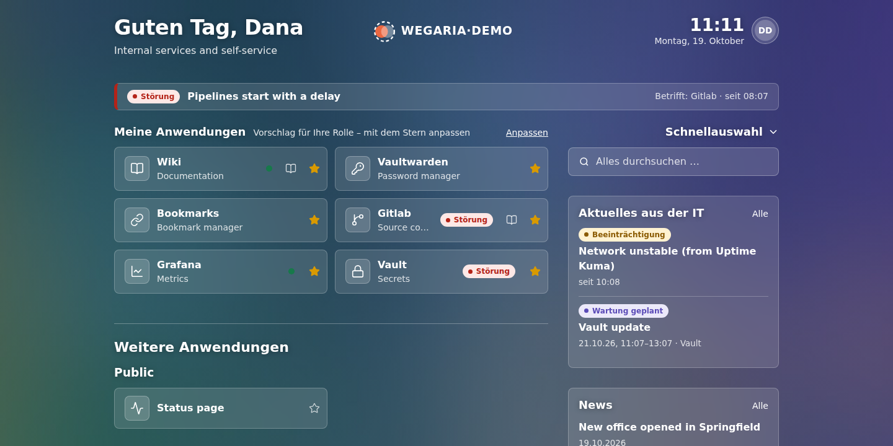
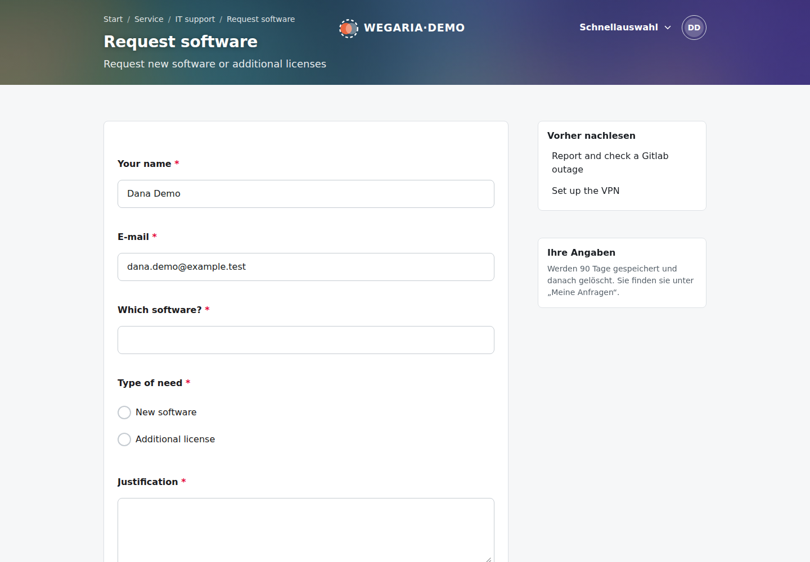
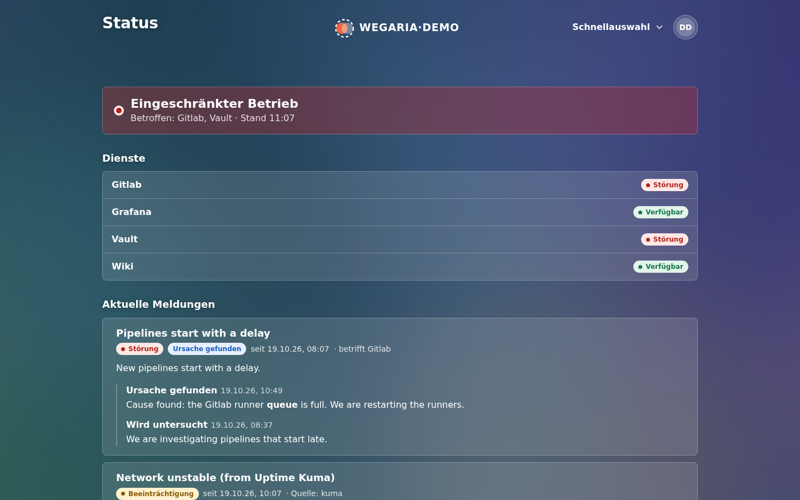

A start page that answers two questions
Where do I want to go? And is anything disrupted on the way? Wegaria is a lightweight, self-hosted start page with application tiles, honest status, news, a FAQ and self-service forms, configured as code.

What it does
One page people open in the morning, and the one they come back to when something does not work.
Tiles that respect groups
Applications, sections and favourites. What a person may not see answers 404 and appears nowhere, not even in search.
Honest status
Reads Uptime Kuma, Prometheus and Gatus. A notice can explain or worsen a measured state, never hide it.
Incidents and maintenance
Markdown files, an optional editor in the administration, and a status page that works without signing in.
Sign-in your way
Forward auth behind Traefik with Authelia, or native OIDC with Keycloak or Authelia, with group re-checks and back-channel logout.
Service area
FAQ pages and SurveyJS forms. Answers are validated again on the server and delivered by e-mail, signed webhook or git from a persistent queue.
Discovery from Docker labels
Reads Homepage labels and adds permissions, through a read-only socket proxy and never the socket itself.
News
RSS and Atom feeds, per-feed access, one search rule across tiles, FAQ and news.
Configuration as code
YAML and Markdown in git, one schema with editor completion, live reload that keeps the last good version when a file breaks.
Looks like part of your place
Brand colour, logo and background through a handful of settings. Light and dark mode, readable on a phone, usable without JavaScript, and checked automatically for accessibility.


Run it in a minute
Try it with the demo, which brings mock backends and example content:
git clone <repository> wegaria && cd wegaria
npm install
npm run demo # http://localhost:3100Then a minimal wegaria.yaml:
title: Intranet
auth: { mode: dev, groups: [staff] }
sections:
- title: Daily work
items:
- { title: Mail, url: https://mail.example.com, icon: "lucide:mail" }